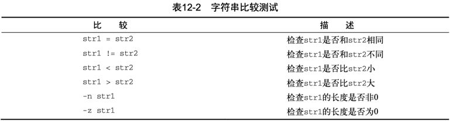
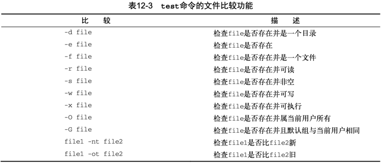
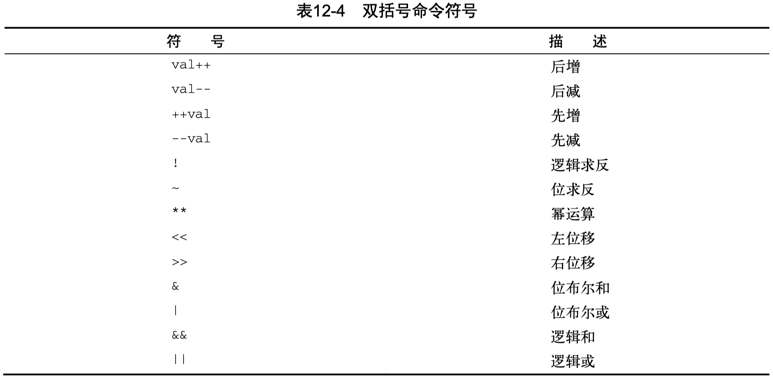

Linux Shell Program - test
Linux 下的 Shell 编程之比较和测试表达式。
到目前为止，在if语句中看到的都是普通shell命令。
你可能想问，if-then语句是否能测试命令退出状态码之外的条件呢？
答案是不能。但在bash shell中有个好用的工具可以帮你通过if-then 语句测试其他条件。
test命令提供了在if-then语句中测试不同条件的途径。
- 如果test命令中列出的条件成立，test命令就会退出并返回退出状态码0。这样if-then语句就与其他编程语言中的if-then语句以类似的方式工作了。
- 如果条件不成立，test命令就会退出并返回非零的退出状态码，这使得 if-then语句不会再被执行。
test命令的格式非常简单。
condition是test命令要测试的一系列参数和值。
当用在if-then语句中时，test命令看起来是这样的：
如果不写 test 命令的 condition 部分，它会以非零的退出状态码退出，并执行 elif/else 语句块。
bash shell 提供了另一种条件测试方法，无需在 if-then 语句中声明 test 命令。
方括号 定义了测试条件。
注意，第一个方括号之后和第二个方括号之前必须加上一个空格，否则就会报语法错。
test 命令（方括号）可以判断三类条件：
- 数值比较
- 字符串比较
- 文件属性判断
方括号#
bash shell 提供了另一种条件测试方法，无需在 if-then 语句中声明 test 命令。
方括号 定义了测试条件。
注意，第一个方括号之后和第二个方括号之前必须加上一个空格，否则就会报错。
test 命令可以判断三类条件：
- 数值比较
- 字符串比较
- 文件比较
非空判断#
方括号 if [ condition ]（等效 test condition），可用于变量判空：
- 变量 set 有值，则返回 TRUE；
- 变量 unset 为空，则返回 FALSE；
Ξ ~ → if [ $isAtHome ] ; then echo "isAtHome" ; fi
isAtHome
Ξ ~ → if [ $isAtOffice ] ; then echo "isAtOffice" ; fi
Ξ ~ →
数值比较#
使用 test 命令最常见的情形是对两个数值进行比较。数值条件测试可以用在数字和变量上。

对于命令执行的返回状态码，可按数值形式进行判断：if [ $? -eq 0 ] or if [ $? -ne 0 ]。
字符串比较#
条件测试还允许比较字符串值。比较字符串比较烦琐，你马上就会看到。

[ -n string ]：测试字符串非空，成立返回0；[ -z string ]：测试字符串为空，成立返回0；
对于命令执行的返回状态码，也可按字符串形式进行判断：if [ "$?" = "0" ] or if [ "$?" != "0" ]。
以下针对 $isAtOffice 的 -n/-z 判断均成立！？
Ξ ~ → if [ -n $isAtOffice ] ; then echo "isAtOffice" ; fi
isAtOffice
# 或者
Ξ ~ → if [ -z $isAtOffice ] ; then echo "not isAtOffice" ; fi
not isAtOffice
需要对变量引用添加双引号字符串化，再判断：
Ξ ~ → if [ -n "$isAtOffice" ] ; then echo "isAtOffice" ; fi
Ξ ~ →
Ξ ~ → if [ -z "$isAtOffice" ] ; then echo "not isAtOffice" ; fi
not isAtOffice
当然，还可以这样判空："$isAtOffice" = ""。
MacBook 上一般没有有线网卡，执行 awk 匹配为空，打印 eth_dev 为空：
$ eth_dev=$(networksetup -listallhardwareports | awk '/Hardware Port: Ethernet/{getline; print $NF}')
$ echo $eth_dev
但是 [ -n $eth_dev ] 测试为真：
原因是 awk 未匹配，实际上不会执行变量定义（及赋值），对于 unset 的 eth_dev，$eth_dev 被当成字符串，而不是解引用变量！
修改为 [ -n "$eth_dev" ] 则符合预期，则双引号内部会尝试解引用，unset 变量的值为空串。
可以进一步通过变量替换测试来验证以上问题。
$ echo "${eth_dev:-unset_or_null}"
unset_or_null
# macOS bash shell 版本较低，返回空
$ echo "${eth_dev-unset}"
# ubuntu 等新 bash shell，返回unset
$ echo "${eth_dev-unset}"
unset
为了安全起见，对于方括号中对变量的引用判空，建议加双引号确保解引用，兼顾变量 unset 的情况。
- :
if [ -n $var ]; then echo "not empty" ; fi - : if [ -n "$var" ]; then echo "not empty" ; fi
文件属性判断#
最后一类比较测试很有可能是 shell 编程中最为强大、也是用得最多的比较形式。它允许你测试 Linux 文件系统上文件和目录的状态。

Check if a directory exists in a shell script
Linux / UNIX: Find Out If a Directory Exists or Not
- 以下脚本使用
-d判断目录是否存在：
# 当前目录下如果有 `forms-debug` 文件夹则进入，否则先创建再进入。
([ -d forms-debug ] || mkdir forms-debug) && cd forms-debug
括号的使命令列表变成了进程列表，生成了一个子shell来执行对应的命令。
- 参考 Create Permanent aliases，考虑将常用的便捷命令收集在
~/.bash_aliases，然后在~/.bashrc或~/.zshrc中判断文件有效 source 载入。
- 在
/etc/zprofile和/etc/profile中使用-x测试脚本可执行，然后 eval 执行：
$ cat /etc/zprofile
# System-wide profile for interactive zsh(1) login shells.
# Setup user specific overrides for this in ~/.zprofile. See zshbuiltins(1)
# and zshoptions(1) for more details.
if [ -x /usr/libexec/path_helper ]; then
eval `/usr/libexec/path_helper -s`
fi
- 在
/etc/profile中使用-r测试脚本可读，然后 source 引入：
$ cat /etc/profile
# System-wide .profile for sh(1)
if [ -x /usr/libexec/path_helper ]; then
eval `/usr/libexec/path_helper -s`
fi
if [ "${BASH-no}" != "no" ]; then
[ -r /etc/bashrc ] && . /etc/bashrc
fi
- 在 transfer.sh 中使用
! -e排查捕获处理文件不存在的情形：
if [ ! -e "$file" ]; then
echo "$file: No such file or directory" >&2
return 1
fi
if [ -d "$file" ]; then
# ...
fi
复合条件测试#
if-then 语句允许你使用布尔逻辑来组合测试。有两种布尔运算符可用：
- [ condition1 ] && [ condition2 ]
- [ condition1 ] || [ condition2 ]
第一种布尔运算使用 AND 布尔运算符来组合两个条件。要让 then 部分的命令执行，两个条件都必须满足。
第二种布尔运算使用 OR 布尔运算符来组合两个条件。如果任意条件为 TRUE，then 部分的命令就会执行。
返回值和执行结果综合判断示例：
-a选项用来对其他两个选项的结果执行布尔AND运算。
is_iosdeploy_installed()
{
# ios-deploy -V | read ios_deploy_version # wrong???
ios_deploy_version=$(ios-deploy -V)
if [ $? -eq 0 -a $ios_deploy_version ]
# if test $ios_deploy_version
# if [ -n "$ios_deploy_version" ]
then
echo "ios-deploy version: $ios_deploy_version"
return 0
else
echo "ios-deploy not found, PLS install first!!!"
return 1
fi
}
注意以下复合条件测试的综合示例：
if is_iosdeploy_installed
then
ios_deploy_device=`ios-deploy -c`
# if [ $? -eq 0 -a $ios_deploy_device ] # [: too many arguments
# if [ $? -eq 0 ] && [ $ios_deploy_device ] # [: too many arguments
# if [[ $? -eq 0 ]] && [[ $ios_deploy_device ]] # right, not recommended
if [ $? -eq 0 ] && [ -n "$ios_deploy_device" ] # SC2166 建议写法
then
echo $ios_deploy_device
main $@ # $*
else
echo "ios-deploy detect failed!"
fi
fi
if-then 的高级特性#
bash shell 提供了两项可在 if-then 语句中使用的高级特性：
- 用于数学表达式的双括号
- 用于高级字符串处理功能的双方括号
双括号#
双括号命令 (( expression )) 支持更多的数学运算符。
双括号表达式有状态返回码，当运算结果非零时，返回0；否则，返回1。
相比test命令只能使用简单的算术操作，双括号命令允许在比较过程中使用高级数学表达式。
$ man bash
((expression))
The expression is evaluated according to the rules described below under ARITHMETIC EVALUATION. If the value of the expression is non-zero, the return status is 0; otherwise the return status is 1. This is exactly equivalent to let "expression".

可以在脚本中使用双括号来执行数学运算，也可以使用if判断计算结果状态。
#!/bin/bash
n=0
(( n += 1 )) #Increment
echo $? # 返回0
(( n -= 1))
echo $? # 返回1
echo "n = $n"
val1=10
if (( $val1 ** 2 > 90 ))
then (( val2 = $val1 ** 2 ))
echo "The square of $val1 is $val2"
fi
双方括号#
双方括号表达式 [[ expression ]] 提供了针对字符串比较的高级特性。
$ man bash
[[ expression ]]
Return a status of 0 or 1 depending on the evaluation of the conditional expression expression.
双方括号里的expression使用了test命令中采用的标准字符串比较。但它提供了test命令未提供的另一个特性——模式匹配（pattern matching）。
在 ohmyzsh/plugins/shell-proxy/ 中，这里的双方括号貌似可以改为单方括号？
$ cat $HOME/.config/proxy
#!/bin/bash
if [[ "$(uname)" = Darwin ]]; then
echo "http://127.0.0.1:6152" # Surge Mac
else
echo "http://127.0.0.1:8123" # polipo
fi
在模式匹配中，可以定义一个正则表达式来匹配字符串值。
#!/bin/bash
# using pattern matching
#
if [[ $USER == r* ]]
then
echo "Hello $USER"
else
echo "Sorry, I do not know you"
fi
双等号（==）将右边的字符串（r*）视为一个模式，并应用模式匹配规则。
另外一种写法是利用 =~ 判断匹配包含关系。
命令行测试：
➜ ~ strA="helloworld"
➜ ~ strB="low"
➜ ~ if [[ $strA == *low* ]] ; then echo "包含" ; else echo "不包含" ; fi
包含
➜ ~ if [[ $strA =~ $strB ]] ; then echo "包含" ; else echo "不包含" ; fi
包含
关于shell中的boolean#
在shell脚本中没有布尔值的概念，只能按照字符串处理。
How can I declare and use Boolean variables in a shell script?
the_world_is_flat=true
# ...do something interesting...
if [ "$the_world_is_flat" = true ] ; then
echo 'Be careful not to fall off!'
fi
Say we have the following condition.
In the following cases2, this condition will evaluate to true and execute the nested command.
# Variable var not defined beforehand. Case 1
var='' # Equivalent to var="". # Case 2
var= # Case 3
unset var # Case 4
var='<some valid command>' # Case 5
What I do recommend:
Here are ways I recommend you check your "Booleans". They work as expected.
my_bool=true
if [ "$my_bool" = true ]; then
if [ "$my_bool" = "true" ]; then
if [[ "$my_bool" = true ]]; then
if [[ "$my_bool" = "true" ]]; then
if [[ "$my_bool" == true ]]; then
if [[ "$my_bool" == "true" ]]; then
if test "$my_bool" = true; then
if test "$my_bool" = "true"; then